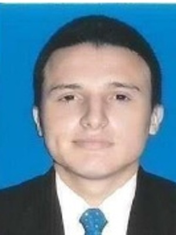

Correo:
Celular:
Dirección: Calle 117, Conjunto, Ibagué.
Regente de farmacia, asesor comercial, mensajero, técnico en sistemas y bachiller académico, estudiante de ing, sistemas. sexto semestre, serio, responsable, alta motivación para laborar y servir de la mejor manera a la entidad a la que me vincule, con capacidades eficientes para la aplicación de habilidades, destrezas, valores y comportamientos sobre actividades productivas relacionadas con el cargo al que aspiro, ya sea el área de ventas, seguridad o mensajería.
Cuento con mi vehículo con papeles al día listo para trabajar.
Institución Educativa Técnica Celmira Huertas
2007
Institución Educativa Distrital República del Ecuador
2013
SENA
(Finalizado)
SENA
▸ Operador de medios tecnológicos (FAC) — 2015
▸ Fundamentación de vigilancia (La Ciencia de la Seguridad) — 2019
▸ Reentrenamiento medios tecnológicos (La Ciencia de la Seguridad) — 2019
▸ Servicio al cliente (SENA)
▸ Gestión empresarial (SENA)
▸ Inglés nivel 1-4 (SENA)
▸ Técnico en sistemas (SENA)
▸ Tecnólogo en Regencia de farmacia (SENA) — Diploma en trámite
01/06/2020 – 07/09/2021
Funciones:
▸ Orientar personal, pacientes y visitantes en los diferentes procesos de la clínica.
▸ Recibir correspondencia y apoyar la atención al cliente.
▸ Apoyar otras funciones asignadas por la institución.
05/05/2019 – 20/01/2020
Funciones:
▸ Compra de materiales y diligencias.
▸ Envío de correspondencia y labores de mensajería.
Jefe: — Tel:
25/10/2018 – 20/02/2020
Funciones:
▸ Vigilancia y control de acceso.
▸ Reporte de novedades y apoyo a procedimientos de seguridad.
Jefe inmediato: Dra. María Eledid — Tel:
20/04/2018 – 16/07/2018
Funciones:
▸ Atención al cliente y ventas.
▸ Preparación de productos y apoyo en caja.
10/02/2018 – 28/03/2018
Funciones:
▸ Venta por catálogo puerta a puerta.
▸ Atención al cliente en punto de venta.
10/01/2017 – 09/07/2017
Funciones:
▸ Soporte básico a usuarios y equipos.
▸ Apoyo en mantenimiento y gestión de herramientas.
CACOM 1, Puerto Salgar, Cundinamarca — 11/09/2015 – 05/04/2016
Funciones:
▸ Monitorista de seguridad: control de acceso, exteriores e interiores.
▸ Detección y reporte de novedades.
▸ Aura — Formadora / Docente, Ministerio de Educación Nacional. Tel:
▸ William — Docente, INEM-Ibagué / Universidad del Tolima. Tel:
▸ Amparo — Administradora. Tel: